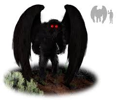
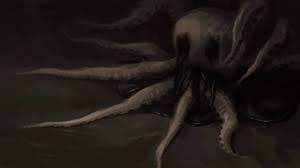
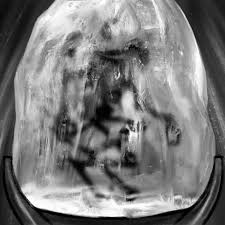
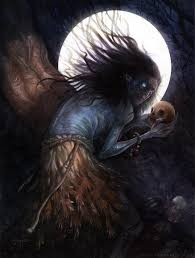
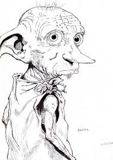

<!DOCTYPE html>
<html lang="en"></html>
<head>
    
    <meta charset="UTF-8">
    <meta name="viewport" content="width=device-width, initial-scale=1.0">
    <title>Entities</title>
<link rel="stylesheet" href="jaeger.css">
</head>
<body>
    <div class="header">
        <div class="nav">
            <ul>
                <li><a href ="index.html">Home</a></li>
                <li><a href ="moth.html">Detailed Entity</a></li>
                <li><a href ="sight.html">Sighting Locations</a></li>
                <li><a href ="loc.html">Entity Locations</a></li>
                <li><a href ="date.html">Sighting Dates</a></li>
            </ul>
        </div> 
        <h1>Entities</h1>
        <p> 
           The following entities are images and titles of some of the mysterious creatures that have been positively identified by members of the general public
        </p>
        <p>
            We have scoured government records and the internet for any information regarding descriptions and images that will help us track down the truth about what is going on.
        </P>
    </div>
    <div class="container">
        
        <p> 
            The Mothman at first appears as a large man, until his wings open up to reveal his true identity
        </p>
    </div>
    <div class="container">
        
        <p> 
            The Nameless Horror is rather obscure. All we know is that it is likened unto an octopus and drags men down to their doom
        </p>
    </div>
    <div class="container">        
        
        <p> 
            The Tsarichina is more of a hole in the ground that drags you in to your death
        </p>
    </div>
    <div class="container">
        
    <p> 
            The Skriker is a fairy that seduces and manipulates
    </p>
    </div>
    <div class="container">
        
    <p> 
            The White Dobbie is a small goblin that can either be kind or cruel
    </p>
    </div>
</div>
</body>
</html>